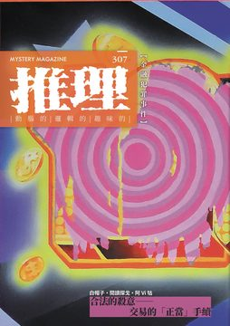
完整介紹
307期主題：「鏈」。當作案工具只是一張簽了名的文件，辦案就成了查一筆錢經過哪些人的手。本期從一八九六年的歐洲騙局讀到當代的定價、投資與理賠。每一道手續都有人簽名、有憑據可查，錢是在哪一手變成別人的？「鏈」說的就是這一串手續，單看每一步都沒問題，接起來是一樁犯罪。
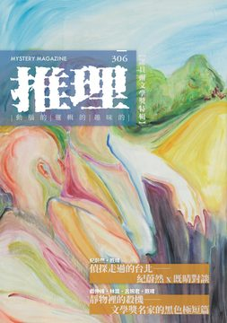
完整介紹
306期主題：「青」。三位諾貝爾桂冠作家在寫犯罪小說時，如何回到類型的規矩底下，再當一次創作生手？另一方面，第九屆林佛兒獎首獎作品正式揭曉，連同整場決審會議的意見與委員評論一起刊出，讀者讀到得獎作，也讀到它被逐條檢驗的過程。「青」，遂成為這兩種狀態的共同名字：名家有生手的一面，新人也要經得起公開討論與評價的過程。
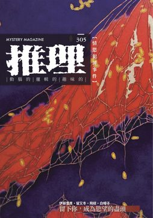
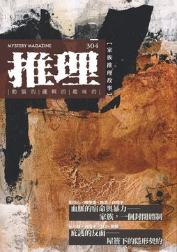
完整介紹
303 期主題：「間諜」。間諜文學長期被龐德電影與好萊塢動作敘事定型，使得這條已有兩千五百年歷史的類型脈絡，在台灣讀者的閱讀經驗裡被切割成「動作」與「異國」兩種印象。本期回到類型的真正核心命題——情報為何而做，間諜為誰服務——從西方類型史的內部探問出發，重新檢視這個被影像簡化已久的書寫傳統。當代本土書寫則接續這條提問軸線，將諜報元素一路推進當代台灣的日常尺度，從國家對國家的戰場，落到資本對個體、家族對成員的微觀現場。間諜在當代不再只是冷戰時期的職業標籤，而是一種關於信任、忠誠與身分如何被體制反覆磋商的提問方式。
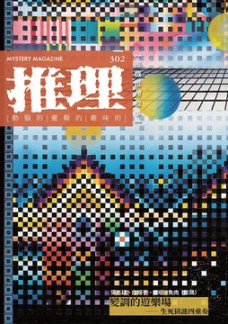
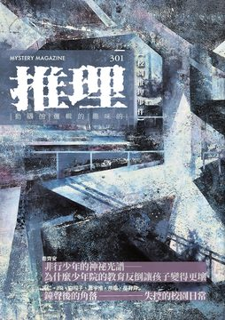
完整介紹
300期主題聚焦在類型傳統的「殺人事件」，尋繹象徵本土犯罪推理文學在時代轉折中的解構與蛻形，並致敬古典本格的標誌性命名傳統，但不再滿足於純粹的智力對決，而是承載極度開放的當代社會議題。創作者們深度挖掘本土空間與歷史記憶，將靈異、民俗與高科技等非理性元素化為放大社會斷層的濾鏡，展現出跨越虛實的文體實驗。推理不再只是破案，而是對敘事本質的深刻叩問；在顛覆日常安全感的謎團中，為當代犯罪文學確立了深邃的本土新座標。
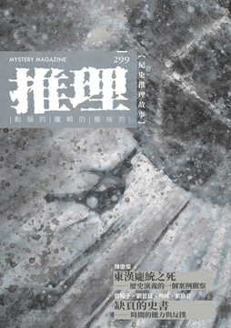

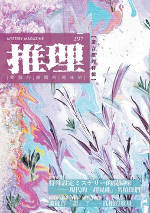
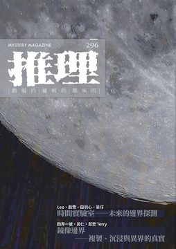
完整介紹
296期主題：「變」，象徵推理文學在時代轉折中的再一次蛻形——從形式、題材到思維的重組。以「變」為核心，探索人與科技、真實與幻象、理性與信仰之間不斷移動的邊界。從AI與時間悖論的冷峻推理，到跨媒體評論與哲學寓言的實驗書寫，呈現類型的多重進化。推理不再只是破案，而是對「變動的世界」的持續追問；而在真相的形變中，我們也看見人性如何於未知裡，試圖「辨」認自己。
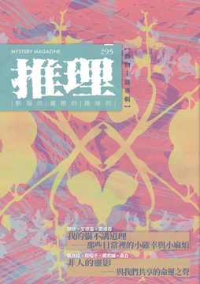
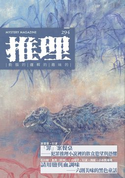
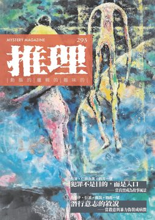
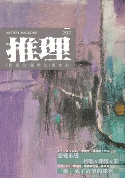
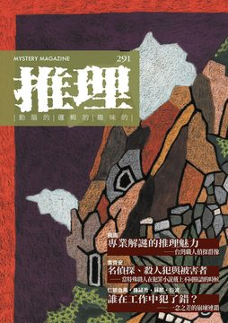
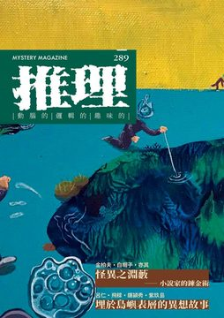
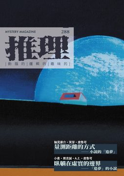
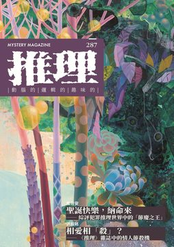
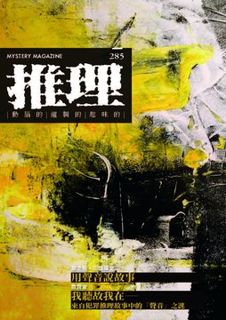
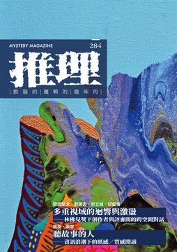